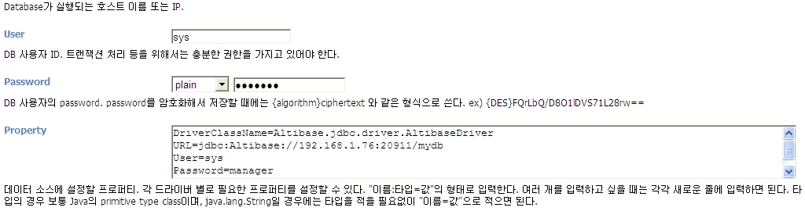
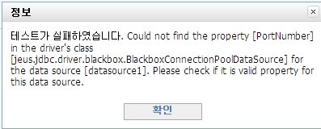
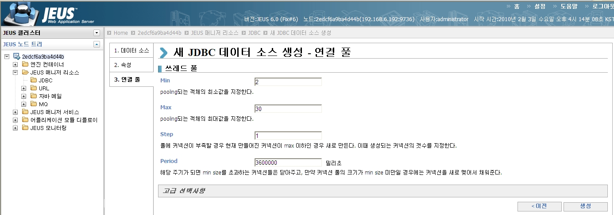
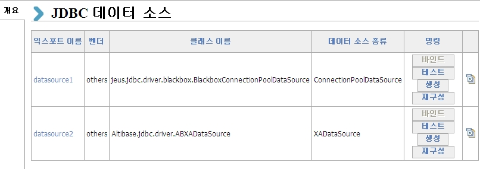
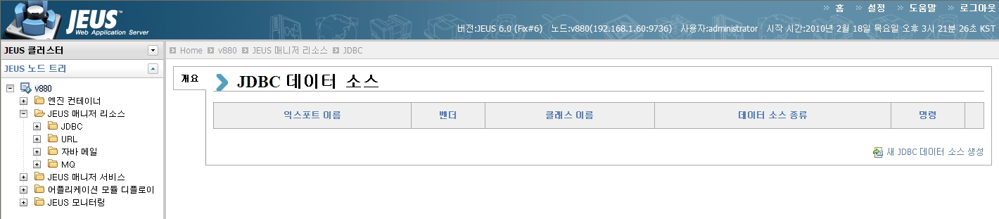
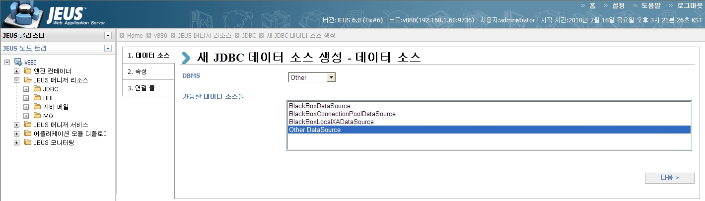
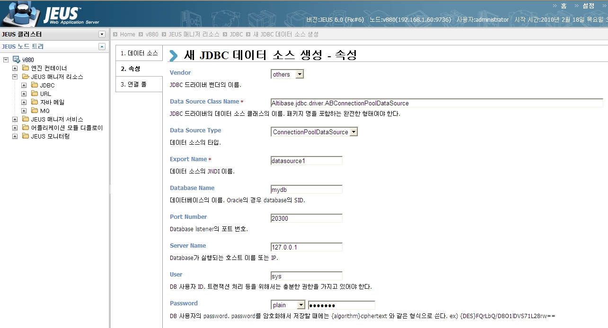
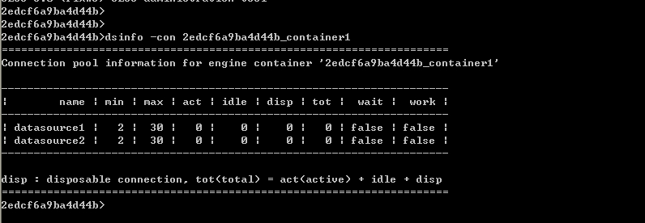

This chapter describes how to integrate ALTIBASE and JEUS.
JDBC Driver
JDBC is a standard interface that allows Java applications to connect the database and execute multiple SQLs.
These JDBC drivers are provided by each database vendor, and ALTIBASE provides the Altibase.jar file. This JDBC driver is located in the $ALTIBASE_HOME/lib directory.
JDBC Driver Setting
To integrate ALTIBASE and JEUS, the JDBC driver (Altibase.jar) provided by ALTIBASE must be located in the $JEUS_HOME/lib/datasource directory.
Connection Pooling
Connection pooling is a framework for caching DB connections. When the connection pool is started, it creates a certain number of physical connections, which reduces the overhead for creating connections during the application execution. The advantages of the connection pool are:
1. Better Performance
Creating DB connection is slow. All real connections in the connection pool are pre-made and ready to handle requests from the application. When the connection is no longer in use, it can be returned to the pool, reducing the overhead of dropping the connection.
2. Connection Management
The number of simultaneous connections can be controlled. By configuring the maximum number of simultaneous connections, the simultaneous connections of the DB can be limited.
Data Source
javax.sql.DataSource is the interface between the application and the connection pool. The javax.sql.DataSource object can be viewed as a factory for DB connections and provides many advantages over java.sql.DriverManager. In this document, the followings are the four types of data sources.
1. Basic Data Source
This returns connections for users. Because there is no connection pooling, there may be additional overhead compared to the connection pool type.
2. Connection Pool Data Source
This receives the connection stored in the connection pool and returns it to the application program. Because it uses the connection pooling function provided by JEUS, it has less overhead than the method of connecting to the DB every time and receiving the connection. When autocommit is set to false, the application can directly control local transactions.
3. XA Data Source
This manages connections used for distributed/global transactions. This data source format should be used only when 2PC (2 Phase Commit) is used. After starting a transaction in EJB or Servlet, 2PC-protocol starts automatically when starting the operating using two or more connections obtained from the XA data source. This connection cannot be used again after the transaction ends.
When using the XADataSource, the transaction recovery function is supported for each data source. For DB integration using the XADataSource, please refer to the ALTIBASE 5.3.3 API manual.
4. Local XA Data Source
Turn off autocommit to use a connection obtained from a connection pool data source so that local transactions are always on, and the transaction manager handles commits and rollbacks. Because of this, local transactions can be emulated to participate in XA. For reference, the local XA data source can be used when it is necessary to participate in XA even if the JDBC driver does not support the XA data source. The local XA data source may not recover properly due to functional limitations, and only one XA data source can participate in one global transaction.
Configuring data source
To integrate Altibase and JEUS, data sources in JEUSMain.xml can be configured. The properties of Javax.sql.DataSource are different for each driver, so the user needs to understand the characteristics of the driver to use and set it accordingly.
The following XML tags <resource><data-source>…<database> can be used as a sub tag of the XML tag.
Tag | Description |
|---|---|
Vender | The name of DB vendor (oracle, mssql, db2, sybase, tibero, others). |
Export-name | The name to be bound to JNDI. The data source object is bound by this name. The user can specify it arbitrarily. |
Data-source-class-name | The data source class name by JDBC driver ABConnectionPoolDataSource ( ALTIBASE 6.1.1 or lower), AltibaseConnectionPoolDataSource ( ALTIBASE 6.3.1 or later) , This decides how to set BlackboxConnectionPoolDataSource. |
Data-source-type | One of “DataSource”, “ConnectionPoolDataSource”, “XADataSource”, or “LocalXAData- Source” values. |
Data-source-name | The name of the data source. It depends on the driver vendor and is usually the same as the DataSourceClass-Name value.
|
Database-name | The name of the DB (ex: mydb) |
Service-name | Used only when using the Oracle inet driver, and the SID value of the Oracle Database. Not used in conjunction with ALTIBASE. |
description | The description text of data source |
Network-protocol | The protocol used to connect to DB
|
Password | The user password
|
User | The user name |
Port-number | The port number of DB listener |
Server -name | The DNS name or IP address of the server where the DB is running |
Driver-type | For Oracle, the type of driver (ex. thin. oci) |
Property | JDBC custom properties When set to BlackboxConnectionPoolDataSource, specifies DriverClassName, URL, USER, and PASSWORD in this field.
|
Connection-pool | Sets the content specific to connection pooling. |
Auto-commit | Specifies the autocommit value to be assigned to the connection. Set to true or false. In the case of local XA data sources or XA data sources, it is applied only when the connection is not linked to a transaction. |
Action-on-connection-leak | Configures logging or return action for JDBC connection used in components (mainly stateless components-Servlet/JSP, Stateless Session Bean, MDB). |
Data Source Setting
- Directly modifying the XML file in console mode
- Setting in GUI mode using the WebAdmin.
There are two methods of configuring and managing the connection pool when setting the data source: the AltibaseConnectionPoolDataSource method and the BlackboxConnecitonPoolDataSource is no JEUS, but ALTIBASE JDBC driver manages the connection pool, and BlackboxConnecitonDataSource is JEU manages the connection pool.
Let's set the connection pool using AltibaseConnectionPoolDataSource method and BlackboxConnectionPoolDataSource method to set the data source.
1. Set by the BlackboxConnectionPoolDataSource method
Setting by directly modifying the JEUSMain.xml file
Open the JEUSMain.xml file using a file editor and add the contents of <resource> ~ </resource>.
<jeus-system> … <resource> <data-source> <database> <vendor>others</vendor> <export-name>datasource1</export-name> <data-source-class-name>jeus.jdbc.driver.blackbox.BlackboxConnectionPoolDataSource</data-source-class-name> <data-source-type>ConnectionPoolDataSource</data-source-type> <property> <name>DriverClassName</name> <type>java.lang.String</type> <value>Altibase.jdbc.driver.AltibaseDriver</value> </property> <property> <name>URL</name> <type>java.lang.String</type> <value>jdbc:Altibase://127.0.0.1:20300/mydb</value> </property> <property> <name>User</name> <type>java.lang.String</type> <value>sys</value> </property> <property> <name>Password</name> <type>java.lang.String</type> <value>manager</value> </property> <connection-pool> <pooling> <min>2</min> <max>30</max> <step>1</step> <period>3600000</period> </pooling> </connection-pool> </database> </data-source> </resource> … </jeus-system>
2. Setting by using the WebAdmin method
Let's set the connection pool with BlackboxConnectionPoolDataSource using the WebAdmin.
WebAdmin can be accessed at http://localhost:9744/WebAdmin, and by default, USER is the Administrator and password is the value set during installation. Here, the value of 9744 is the value of JEUS_BASSPORT + 8.
DriverClassName=Altibase.jdbc.driver.AltibaseDriver URL= jdbc:Altibase://server_ip:server_port/dbname USER=sys PASSWORD=manager

If the following values are not set in the “Property”, or if any of the values of “Database Name”, “Port Name”, and “Server Name” is set, an error occurs.

If the Min/Max value of the connection pool is set, the basic setting is completed.

After the creation is finished, the test and bind functions are available, and the user needs to bind to reflect the setting.

2. Set by using the AltibaseConnectionPoolDataSource method
Setting by directly modifying the JEUSMain.xml file
Open the JEUSMain.xml file using a file editor and add the contents of <resource> ~ </resource>.
<jeus-system>
…
<resource>
<data-source>
<database>
<vendor>others</vendor>
<export-name>Datasource1</export-name>
<data-source-class-name>Altibase.jdbc.driver.AltibaseConnectionPoolDataSource</data-source-class-name>
<data-source-type>ConnectionPoolDataSource</data-source-type>
<database-name>mydb</database-name>
<port-number>20300</port-number>
<server-name>127.0.0.1</server-name>
<user>sys</user>
<password>manager</password>
<auto-commit>true</auto-commit>
<property>
<name>Encoding</name>
<type>java.lang.String</type>
<value>KSC5601</value>
</property>
<property>
<name>maxPoolSize</name>
<type>java.lang.Integer</type>
<value>30</value>
</property>
<connection-pool>
<pooling>
<min>2</min>
<max>30</max>
<step>1</step>
<period>3600000</period>
</pooling>
</connection-pool>
</database>
</data-source>
</resource>
…
</jeus-system>
- Set by using the WebAdmin
JEUS can be started and shutdown, and data source can be set with the WebAdmin provided by JEUS. Property values set through WebAdmin are saved in JEUSMain.xml. If the user compares the JEUSMain.xml file before and after setting the property value, the user can see that the property value of ALTIBASE is modified between <resource> ~ </resource>.

Click "Create New JDBC Data Source" to create a new JDBC data source.

Select “Other” after selecting DBMS as “Other DataSource”.

Set "Data Source Class Name" ~"Password". When setting "Data Source Class Name", it should not be entered as AltibaseConnectionPoolDataSource, but must be entered in the complete form including the name and package name of the data source lass of the JDBC driver (Altibase.jdbc.driver.AltibaseConnectionPoolDataSource).
For connection pool, configuration, binding, and testing, please refer to the setting of BlackboxConnectionPoolDataSource.
Considerations when configuring the data source
- Considerations when using AltibaseConnectionPoolDataSource
- When AltibaseConnectionPoolDataSource is set as Data-Source-Class-Name, properties such as “Encoding” and “maxPoolSize” can be specified and used, but when using BlackboxConnectionPoolDataSource, the property cannot be used.
- URL-related method name changes according to the Altibase version. Therefore, a property name must be used to match the version.
2. Deadlock occurrence
- When using AltibaseConnectionPoolDataSource and initialPoolSize, lock may occur. To solve this problem that occurs while using the values of pool to be used in JEUS in the ALTIBASE JDBC drive, use only the MaxPoolSize value instead of the initialPoolSize value.
<property>
<name>encoding</name>
<type>java.lang.String</type>
<value>KSC5601</value>
</property>
<property>
<name>maxPoolSize</name>
<type>java.lang.Integer</type>
<value>10</value>
</property>
Checking query
This function checks the status of the connection by sending a specific SELECT query when the application makes a JDBC connection request. This is useful to check for disconnection due to internal error of JDBC connection, socket disconnection by the firewall, and so forth. If the check fails, a new physical connection is created and it is returned to the application.
The check query function can be set in two methods. First, simply enter a query statement in the <check-query> tag in the setting, and the function can be extended by using the <check-query-class> tag.
Add directly between <database> ~ </database> in the JEUSMain.xml file. In the case of using WebAdmin, set the value after clicking on the connection pool and advanced options when creating or modifying a datasource.
1. Check-query setting
The query statement for the check query should enter a command for query only, not a command to update the DB.
<check-query>select 1 from dual</check-query>
If there is no response from the DB server while executing the check-query, there may be a situation in which waiting indefinitely. To prevent this, check-query-timeout can be set. The setting value is msec, and if it is less than 1000msec, it is set to 0.
<check-query-timeout>20000</check-query-timeout>
3. Non-validation-interval setting (msec)
If overhead occurs due to the frequent use of check-query, it can be solved by setting Non-validation-interval.
If the difference between the time when performing check-query and the time when the last connection was used is between the settings of Non-validation-interval, do not execute the check-query.
<non-validation-interval>10000</non-validation-interval>
4. Destroy policy for check-query setting
If the check-query fails, the user can determine the destroy policy for the remaining connections in the connection pool as follows.
FailedConnectionOnly: Only discard the connection for which check-query. Default settings.
AllConnections: Discard all remaining connections.
<destroy-policy-on-check-query>AllConnections</destroy-policy-on-check-query>
Connection pool monitoring
There are two methods to monitor the connection pool: using jeusadmin and WebAdmin. This section describes how to monitor the connection pool by using jeusadmin.
When using jeusadmin, the command “dsinfo” is used to monitor the JDBC connection pool configured in the engine container. To monitor all connection pools configured in a container, specify the container name, and to monitor a single connection pool, specify the data source name created in the container.
Jeusadmin> Dsinfo –con Container name Data source name (export name)

| Description |
|---|---|
Name | The export name of DB pool |
Min | The minimum size of connections maintained in the pool |
Max | The maximum size of connections maintained in the pool |
Act | The number of connection the application is using
|
Idle | The number of connections currently in the pool |
Disp | The total number of connection once used and discarded |
Tot | The total number of DB connections (active+idle+disposable connection) |
Wait | Determines whether to make the thread wait if the connection is empty. If it is "true", it waits, and if it is "false", it makes a connection independent of the pool.
|
work | It is “true” if the DB pool is active, and “false” if it is inactive or not yet created. |
Additionally, the user can use the 'dsconinfo' command to check the current status of connection for each data source or related statistics.
Jeusadmin> dsconinfo –con Container name Data source name (export name)
2edcf6a9ba4d44b>dsconinfo -con 2edcf6a9ba4d44b_container1 datasource1 =============================================================== Connection information list for the engine container[2edcf6a9ba4d44b_container1] --------------------------------------------------------------- | id | state | state-time(ms) | use-count | type | --------------------------------------------------------------- | datasource1-1 | idle | 10000 | 0 | pooled | --------------------------------------------------------------- ===============================================================
| Description |
|---|---|
Id | The unique value attached to each connection in the data source of the container
|
State | Indicates the connection state and there are 'active' and 'idle' states. If it is active, it means the connection is currently used |
State time | The time that persists after the connection is changed to the current state |
type | Distinguish the state between pooled and disposable connections
|
Usecount | Indicates how many times an op and close pair has ocurred |
If the user knows the Export Name of the data source, you can test whether the pool is available with jeusadmin.
Jeusadmin> testdsconfig data source name (export name)
2edcf6a9ba4d44b>testdsconfig datasource1 Configuration is valid. You can use it.
{kind=link}
{kind=link}
{kind=link}
{kind=link}
{kind=link}
{kind=link}
{kind=link}
{kind=link}
{kind=link}
{kind=link}
{kind=link}
{kind=link}
{kind=link}